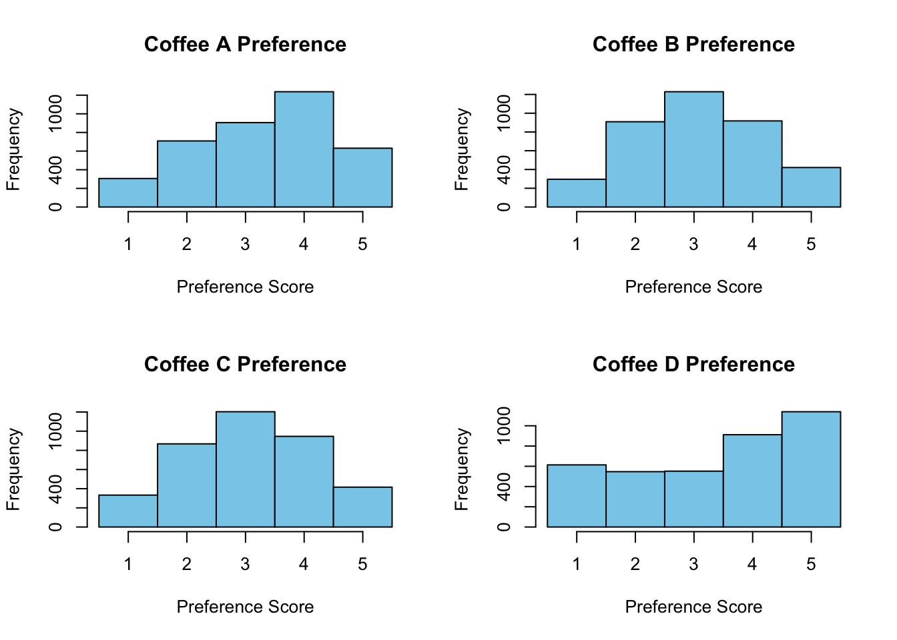

Quarto enables you to weave together content and executable code into a finished document. To learn more about Quarto see https://quarto.org.
Project Title –>The Great American Coffee Taste Test
In October 2023, [“world champion barista” James Hoffmann](https://www.youtube.com/watch?v=bMOOQfeloH0) and [coffee company Cometeer](https://cometeer.com/pages/the-great-american-coffee-taste-test) held the “Great American Coffee Taste Test” on YouTube, during which viewers were asked to fill out a survey about 4 coffees they ordered from Cometeer for the tasting. [Data blogger Robert McKeon Aloe analyzed the data the following month](https://rmckeon.medium.com/great-american-coffee-taste-test-breakdown-7f3fdcc3c41d).
For this project, I used the data coffee_survey. most of the variables were character variables except the coffee preference. For regression, I used multinomial because there were more than 2 categories. As for the function, I wanted to make one than can count the mode because the numerical variable is rankings, so it would make more sense to count the mode.
── Attaching core tidyverse packages ──────────────────────── tidyverse 2.0.0 ──
✔ dplyr 1.1.4 ✔ readr 2.1.5
✔ forcats 1.0.0 ✔ stringr 1.5.1
✔ ggplot2 3.5.1 ✔ tibble 3.2.1
✔ lubridate 1.9.3 ✔ tidyr 1.3.1
✔ purrr 1.0.2
── Conflicts ────────────────────────────────────────── tidyverse_conflicts() ──
✖ dplyr::filter() masks stats::filter()
✖ dplyr::lag() masks stats::lag()
ℹ Use the conflicted package (<http://conflicted.r-lib.org/>) to force all conflicts to become errors
Attaching package: 'janitor'
The following objects are masked from 'package:stats':
chisq.test, fisher.test
here() starts at /Users/sebrinamohammed/Desktop/Rbootcamp/Final_EPI590R
Rows: 4042 Columns: 113
── Column specification ────────────────────────────────────────────────────────
Delimiter: ","
chr (44): Submission ID, What is your age?, How many cups of coffee do you t...
dbl (13): Lastly, how would you rate your own coffee expertise?, Coffee A - ...
lgl (56): Where do you typically drink coffee? (At home), Where do you typic...
ℹ Use `spec()` to retrieve the full column specification for this data.
ℹ Specify the column types or set `show_col_types = FALSE` to quiet this message.
Submission ID
What is your age?
How many cups of coffee do you typically drink per day?
Where do you typically drink coffee?
Where do you typically drink coffee? (At home)
Where do you typically drink coffee? (At the office)
Where do you typically drink coffee? (On the go)
Where do you typically drink coffee? (At a cafe)
Where do you typically drink coffee? (None of these)
How do you brew coffee at home?
How do you brew coffee at home? (Pour over)
How do you brew coffee at home? (French press)
How do you brew coffee at home? (Espresso)
How do you brew coffee at home? (Coffee brewing machine (e.g. Mr. Coffee))
How do you brew coffee at home? (Pod/capsule machine (e.g. Keurig/Nespresso))
How do you brew coffee at home? (Instant coffee)
How do you brew coffee at home? (Bean-to-cup machine)
How do you brew coffee at home? (Cold brew)
How do you brew coffee at home? (Coffee extract (e.g. Cometeer))
How do you brew coffee at home? (Other)
How else do you brew coffee at home?
On the go, where do you typically purchase coffee?
On the go, where do you typically purchase coffee? (National chain (e.g. Starbucks, Dunkin))
On the go, where do you typically purchase coffee? (Local cafe)
On the go, where do you typically purchase coffee? (Drive-thru)
On the go, where do you typically purchase coffee? (Specialty coffee shop)
On the go, where do you typically purchase coffee? (Deli or supermarket)
On the go, where do you typically purchase coffee? (Other)
Where else do you purchase coffee?
What is your favorite coffee drink?
Please specify what your favorite coffee drink is
Do you usually add anything to your coffee?
Do you usually add anything to your coffee? (No - just black)
Do you usually add anything to your coffee? (Milk, dairy alternative, or coffee creamer)
Do you usually add anything to your coffee? (Sugar or sweetener)
Do you usually add anything to your coffee? (Flavor syrup)
Do you usually add anything to your coffee? (Other)
What else do you add to your coffee?
What kind of dairy do you add?
What kind of dairy do you add? (Whole milk)
What kind of dairy do you add? (Skim milk)
What kind of dairy do you add? (Half and half)
What kind of dairy do you add? (Coffee creamer)
What kind of dairy do you add? (Flavored coffee creamer)
What kind of dairy do you add? (Oat milk)
What kind of dairy do you add? (Almond milk)
What kind of dairy do you add? (Soy milk)
What kind of dairy do you add? (Other)
What kind of sugar or sweetener do you add?
What kind of sugar or sweetener do you add? (Granulated Sugar)
What kind of sugar or sweetener do you add? (Artificial Sweeteners (e.g., Splenda))
What kind of sugar or sweetener do you add? (Honey)
What kind of sugar or sweetener do you add? (Maple Syrup)
What kind of sugar or sweetener do you add? (Stevia)
What kind of sugar or sweetener do you add? (Agave Nectar)
What kind of sugar or sweetener do you add? (Brown Sugar)
What kind of sugar or sweetener do you add? (Raw Sugar (Turbinado))
What kind of flavorings do you add?
What kind of flavorings do you add? (Vanilla Syrup)
What kind of flavorings do you add? (Caramel Syrup)
What kind of flavorings do you add? (Hazelnut Syrup)
What kind of flavorings do you add? (Cinnamon (Ground or Stick))
What kind of flavorings do you add? (Peppermint Syrup)
What kind of flavorings do you add? (Other)
What other flavoring do you use?
Before today's tasting, which of the following best described what kind of coffee you like?
How strong do you like your coffee?
What roast level of coffee do you prefer?
How much caffeine do you like in your coffee?
Lastly, how would you rate your own coffee expertise?
Coffee A - Bitterness
Coffee A - Acidity
Coffee A - Personal Preference
Coffee A - Notes
Coffee B - Bitterness
Coffee B - Acidity
Coffee B - Personal Preference
Coffee B - Notes
Coffee C - Bitterness
Coffee C - Acidity
Coffee C - Personal Preference
Coffee C - Notes
Coffee D - Bitterness
Coffee D - Acidity
Coffee D - Personal Preference
Coffee D - Notes
Between Coffee A, Coffee B, and Coffee C which did you prefer?
Between Coffee A and Coffee D, which did you prefer?
Lastly, what was your favorite overall coffee?
Do you work from home or in person?
In total, much money do you typically spend on coffee in a month?
Why do you drink coffee?
Why do you drink coffee? (It tastes good)
Why do you drink coffee? (I need the caffeine)
Why do you drink coffee? (I need the ritual)
Why do you drink coffee? (It makes me go to the bathroom)
Why do you drink coffee? (Other)
Other reason for drinking coffee
Do you like the taste of coffee?
Do you know where your coffee comes from?
What is the most you've ever paid for a cup of coffee?
What is the most you'd ever be willing to pay for a cup of coffee?
Do you feel like you’re getting good value for your money when you buy coffee at a cafe?
Approximately how much have you spent on coffee equipment in the past 5 years?
Do you feel like you’re getting good value for your money with regards to your coffee equipment?
Gender
Gender (please specify)
Education Level
Ethnicity/Race
Ethnicity/Race (please specify)
Employment Status
Number of Children
Political Affiliation
Create a {gtsummary} table of descriptive statistics about your data (1 pt)
Rows: 4042 Columns: 57
── Column specification ────────────────────────────────────────────────────────
Delimiter: ","
chr (44): submission_id, age, cups, where_drink, brew, brew_other, purchase,...
dbl (13): expertise, coffee_a_bitterness, coffee_a_acidity, coffee_a_persona...
ℹ Use `spec()` to retrieve the full column specification for this data.
ℹ Specify the column types or set `show_col_types = FALSE` to quiet this message.
Error in check_for_XQuartz(file.path(R.home("modules"), "R_de.so")): X11 library is missing: install XQuartz from www.xquartz.org
submission_id age cups where_drink
Length:4042 Length:4042 Length:4042 Length:4042
Class :character Class :character Class :character Class :character
Mode :character Mode :character Mode :character Mode :character
brew brew_other purchase purchase_other
Length:4042 Length:4042 Length:4042 Length:4042
Class :character Class :character Class :character Class :character
Mode :character Mode :character Mode :character Mode :character
favorite favorite_specify additions additions_other
Length:4042 Length:4042 Length:4042 Length:4042
Class :character Class :character Class :character Class :character
Mode :character Mode :character Mode :character Mode :character
dairy sweetener style strength
Length:4042 Length:4042 Length:4042 Length:4042
Class :character Class :character Class :character Class :character
Mode :character Mode :character Mode :character Mode :character
roast_level caffeine expertise coffee_a_bitterness
Length:4042 Length:4042 Min. : 1.000 Min. :1.000
Class :character Class :character 1st Qu.: 5.000 1st Qu.:1.000
Mode :character Mode :character Median : 6.000 Median :2.000
Mean : 5.694 Mean :2.141
3rd Qu.: 7.000 3rd Qu.:3.000
Max. :10.000 Max. :5.000
NA's :104 NA's :244
coffee_a_acidity coffee_a_personal_preference coffee_a_notes
Min. :1.000 Min. :1.000 Length:4042
1st Qu.:3.000 1st Qu.:2.000 Class :character
Median :4.000 Median :3.000 Mode :character
Mean :3.635 Mean :3.311
3rd Qu.:4.000 3rd Qu.:4.000
Max. :5.000 Max. :5.000
NA's :263 NA's :253
coffee_b_bitterness coffee_b_acidity coffee_b_personal_preference
Min. :1.000 Min. :1.000 Min. :1.000
1st Qu.:2.000 1st Qu.:2.000 1st Qu.:2.000
Median :3.000 Median :2.000 Median :3.000
Mean :3.013 Mean :2.224 Mean :3.069
3rd Qu.:4.000 3rd Qu.:3.000 3rd Qu.:4.000
Max. :5.000 Max. :5.000 Max. :5.000
NA's :262 NA's :275 NA's :269
coffee_b_notes coffee_c_bitterness coffee_c_acidity
Length:4042 Min. :1.000 Min. :1.000
Class :character 1st Qu.:2.000 1st Qu.:2.000
Mode :character Median :3.000 Median :2.000
Mean :3.072 Mean :2.367
3rd Qu.:4.000 3rd Qu.:3.000
Max. :5.000 Max. :5.000
NA's :278 NA's :291
coffee_c_personal_preference coffee_c_notes coffee_d_bitterness
Min. :1.000 Length:4042 Min. :1.000
1st Qu.:2.000 Class :character 1st Qu.:1.000
Median :3.000 Mode :character Median :2.000
Mean :3.065 Mean :2.163
3rd Qu.:4.000 3rd Qu.:3.000
Max. :5.000 Max. :5.000
NA's :276 NA's :275
coffee_d_acidity coffee_d_personal_preference coffee_d_notes
Min. :1.000 Min. :1.000 Length:4042
1st Qu.:3.000 1st Qu.:2.000 Class :character
Median :4.000 Median :4.000 Mode :character
Mean :3.858 Mean :3.376
3rd Qu.:5.000 3rd Qu.:5.000
Max. :5.000 Max. :5.000
NA's :277 NA's :278
prefer_abc prefer_ad prefer_overall wfh
Length:4042 Length:4042 Length:4042 Length:4042
Class :character Class :character Class :character Class :character
Mode :character Mode :character Mode :character Mode :character
total_spend why_drink why_drink_other taste
Length:4042 Length:4042 Length:4042 Length:4042
Class :character Class :character Class :character Class :character
Mode :character Mode :character Mode :character Mode :character
know_source most_paid most_willing value_cafe
Length:4042 Length:4042 Length:4042 Length:4042
Class :character Class :character Class :character Class :character
Mode :character Mode :character Mode :character Mode :character
spent_equipment value_equipment gender gender_specify
Length:4042 Length:4042 Length:4042 Length:4042
Class :character Class :character Class :character Class :character
Mode :character Mode :character Mode :character Mode :character
education_level ethnicity_race ethnicity_race_specify
Length:4042 Length:4042 Length:4042
Class :character Class :character Class :character
Mode :character Mode :character Mode :character
employment_status number_children political_affiliation
Length:4042 Length:4042 Length:4042
Class :character Class :character Class :character
Mode :character Mode :character Mode :character
31 missing rows in the "age" column have been removed.
Table 1: Table 1. Descriptive Statistics of Coffee
# weights: 42 (30 variable)
initial value 7285.487598
iter 10 value 5710.211672
iter 20 value 5427.202719
iter 30 value 5124.438090
iter 40 value 5066.045200
final value 5065.356974
converged
ℹ Multinomial models have a different underlying structure than the models
gtsummary was designed for.
• Functions designed to work with `tbl_regression()` objects may yield
unexpected results.
Characteristic
log(OR)
1
95% CI
1
p-value
>65 years old
coffee_a_personal_preference
0.41
-0.07, 0.88
0.093
coffee_b_personal_preference
0.41
-0.11, 0.93
0.13
coffee_c_personal_preference
0.38
-0.12, 0.88
0.14
coffee_d_personal_preference
-0.36
-0.77, 0.06
0.090
18-24 years old
coffee_a_personal_preference
0.19
-0.26, 0.63
0.4
coffee_b_personal_preference
0.53
0.04, 1.0
0.034
coffee_c_personal_preference
0.34
-0.13, 0.82
0.2
coffee_d_personal_preference
0.21
-0.18, 0.60
0.3
25-34 years old
coffee_a_personal_preference
0.27
-0.16, 0.71
0.2
coffee_b_personal_preference
0.42
-0.06, 0.90
0.089
coffee_c_personal_preference
0.33
-0.13, 0.80
0.2
coffee_d_personal_preference
0.24
-0.14, 0.62
0.2
35-44 years old
coffee_a_personal_preference
0.28
-0.16, 0.72
0.2
coffee_b_personal_preference
0.43
-0.05, 0.92
0.080
coffee_c_personal_preference
0.39
-0.08, 0.85
0.10
coffee_d_personal_preference
0.18
-0.20, 0.56
0.3
45-54 years old
coffee_a_personal_preference
0.21
-0.24, 0.66
0.4
coffee_b_personal_preference
0.50
0.01, 1.0
0.047
coffee_c_personal_preference
0.35
-0.13, 0.82
0.2
coffee_d_personal_preference
0.01
-0.38, 0.40
>0.9
55-64 years old
coffee_a_personal_preference
0.14
-0.31, 0.60
0.5
coffee_b_personal_preference
0.41
-0.09, 0.92
0.11
coffee_c_personal_preference
0.42
-0.06, 0.90
0.087
coffee_d_personal_preference
-0.23
-0.62, 0.17
0.3
1
OR = Odds Ratio, CI = Confidence Interval
#Create a figure (1 pt) It doesn’t need to look pretty; feel free to adapt some of the examples from class, which were as simple as hist(data$variable) and as complicated as the forest plot in the {broom} section

I wanted to make a function to find mode because it thought that would made the most sense.
[1] "Mode of Coffee A Preference: 4"
[1] "Mode of Coffee B Preference: 3"
[1] "Mode of Coffee C Preference: 3"
[1] "Mode of Coffee D Preference: 5"
The most popular rating for Coffee A is 4 on a scale of 1-5.Coffee B’s mode rating is 3` Coffee C’s is 3Coffee D’s is 5
The table, regression results, and figure, with appropriate captions (1 pt)